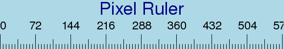

Learn how to code the various content elements you can use in your article:
- Headings
- Major headings
- Minor headings
- Lists
- Ordered lists
- Unordered lists
- Code
- Code listing (several lines of code in a block)
- Inline code (code fragment in a sentence)
- Highlighting
- Sidebars
- Figures
- Tables (see the Tables section)
- Links (see the Links section)
Major headings appear in the table of contents in the right column; this list is automatically generated. Minor headings organize major sections into smaller units and do not appear in the content list.
This heading will not appear in the table of contents.
You can include ordered (<ol>) and unordered (<ul>) lists in your article. Your lists can include code listings, tables, and figures (such as a screenshot in a numbered procedure). In these cases, code the listing, table, or figure inside the closing list item tag (</li>). You can also include lists inside blockquotes (<blockquote>). Do not nest ordered or unordered lists within p elements.
Code listings are common in developerWorks content. Limit code lines to no more than 90 characters. See the scale in Listing 1 below; you should temporarily set your editor's font to Courier or some other monospace font when checking line lengths. For longer code lines, you must find suitable places to split the lines; long lines do not autowrap. Code lines longer than 90 characters will truncate printed-copy text (in typical portrait layout).
Listing 1. Sample code listing at maximum width
<!-- Please limit code lines to 90 characters max. --> <!-- The following line is the max length: --> |-------10--------20--------30--------40--------50--------60--------70--------80--------90 000000000000000000000000000000000000000000000000000000000000000000000000000000000000000000 Line of code Line of code Line of code Line of code Line of indented code Line of indented code Line of code with <angle brackets> Line of code with an ampersand (&) Line of code with something emphasized |
Inline code and other highlighting
Use monospace code font (<code
type="inline">) for names of commands, such as the
make install command, as well as for classes,
objects, methods, code snippets, and any text the user types in.
You can also use strong (<strong>) and em (<em>) for highlighting text. For example, use the strong element for warnings or cautions ("do not press Enter"), and use the em element for terms defined in content ("Major headings appear..."). See developerWorks conventions on highlighting.
You can include sidebars, figures, and tables in your article.
Technical graphics such as screen captures, diagrams, and photographs can enhance and help explain your content. To learn how to create and deliver effective graphics, read "Illustrating your article or tutorial for developerWorks".
Figure 1. Sample figure showing maximum width (580 pixels)

Use any of the following styles for tables. Try to use only one table style in your document. Table 1 uses a traditional heading-style caption and left-aligned columns. Table 1's caption treatment matches that of figures and code listings, and is therefore recommended.
Tables 2 and 3 show you other variations on row color, column alignment, and subheadings
Table 4 is an example of a complex table with row headings that help subcategorize table data. Right-alignment is used for numeric data.
Table 1. Table using a heading element for the caption, all columns left-aligned (recommended style)
| Header 1 | Header 2 |
|---|---|
| First cell in first row | Second cell in first row |
| First cell in second row | Second cell in second row |
| First cell in third row | Second cell in third row |
Table 2 is similar to Table 1, except for the alternating row color and a column with numeric data.
Table 2. Table using alternating row colors, a heading element for the caption, and numeric column
| Header 1 | Header 2 | Numeric Header 3 |
|---|---|---|
| First cell in first row | Second cell in first row | 100 |
| First cell in second row | Second cell in second row | 4 |
| First cell in third row | Second cell in third row | 32 |
In Table 3, the first cell in each row contains a row heading instead of data. Review the source code to see how the scope attribute on the row headings is used to associate the row heading with the data in the row. This table also has a caption, which is optional.
Table 3. Table using row and column headings, and a caption.
| Class | Boys' favorite | Girls' favorite |
|---|---|---|
| 3rd Grade | Trumpet | Flute |
| 4th Grade | Trombone | Clarinet |
Table 4 is a complex table with both column and row headings. In this table, some row headings span multiple rows. The row headings help subcategorize data already categorized at a higher level by column headings. (In a complex table, headings may also span multiple columns or rows.) Note the attributes on the <td> and <th> elements in the source code that help explicitly associate the data cells with header cells in the table (e.g., associating the data value "12" with the headings "First grade", "Mr. Henry", and "Number of boys".) These attribute values are helpful for screen reader users and are requirements for coding complex tables, per accessibility guidelines. For a more detailed explanation of coding complex data tables using id and header attributes, see the IBM Human Ability and Accessibility Center's documentation ("Example 2"): table examples. Notice the examples of right-aligned numeric data and associated headings.
Table 4. Complex table with both column and row headings. Numeric data and the associated headings are right-aligned.
| Class | Teacher | Number of boys | Number of girls |
|---|---|---|---|
| First grade | Mr. Henry | 12 | 9 |
| Mrs. Smith | 8 | 13 |
To keep readers engaged with your content, and not wandering away mid-article to pursue some other author's content, try to minimize off-site links in the body of your article. Instead, in the body, link to the Resources heading and include related content (articles, tutorials, developerWorks downloads, views, technical briefings, Webcasts, demos, books, Web sites, or offers) and urls there. Likewise, for code downloads and demos, don't include the urls in the body; rather, link to the Downloads section and include the urls there.
On the other hand, link freely to elements within the article, such as headings, figures, code listings, and tables, and to other developerWorks content, especially if the article is part of a series. For serial content, include at least one link to the entire series in the body of the article. (In addition, include a link to the entire series in the abstract and Resources section.)
To sum up, you can include these types of links in the body of your article:
-
Link to "Resources": See the Resources section for a link.
- Link to "Downloads": See the Downloads section to download the code.
- Link to a heading: See how to add sidebars to your
article in Sidebars.
- Link to a code listing: See Listing 1 for a sample code listing.
- Link to a figure: See Figure 1
for a 580 ruler that shows the maximum width for an image.
- Link to a table: See Table 1 for a sample table.
- Link to text: Find more detail about the maximum width of code listings.
Include content from another file
Editors may use the include element to include content from another file.
| Description | Name | Size | Download method |
|---|---|---|---|
| Sample Perl scripts for this tutorial | DoNotLeaveThisLink.zip | 10KB | HTTP |
| A related PDF (not of the tutorial)1 | DoNotLeaveThisLink.pdf | 50KB | HTTP |
Information about download methods Get Adobe® Reader®
More downloads
- Demo: How to code a widget
- Presentation: Why code widgets instead of whatnots2
Notes
- This is a sample note about the PDF.
- This is a sample note about the presentation.
Learn
- "Enable
C++ applications for Web services using XML-RPC" (developerWorks,
Jun 2006) is a step-by-step guide to exposing C++ methods as services.
- In the XML area on
developerWorks, get the resources you need to advance your XML
skills, including DTDs, schemas, and XSLT.
- Stay current with
developerWorks technical events and webcasts focused on a variety of
IBM products and IT industry
topics.
- Follow developerWorks on
Twitter.
- Watch developerWorks
on-demand demos ranging from product installation and setup demos for
beginners, to advanced functionality for experienced developers.
Get products and technologies
-
Evaluate IBM
products in the way that suits you best: Download a product trial, try
a product online, use a product in a cloud environment, or spend a few hours
in the
SOA Sandbox learning how to implement Service Oriented Architecture efficiently.
Discuss
- Participate in the discussion forum.
- Get involved in the My developerWorks
community. Connect with other developerWorks users while exploring the
developer-driven blogs, forums, groups, and wikis.